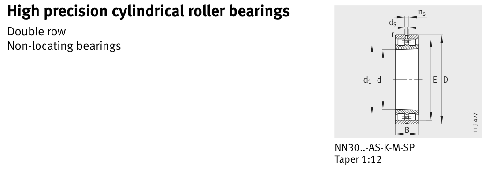

Original catalogue drawing - FAG Schaeffler HR 1, page 424

Scanned from the manufacturer catalogue page listing this part number. All part numbers printed on that table share the same drawing.
Scale cross-section
Blue = inner / outer ring, yellow = rolling element. Drawn to scale from this part's own
dimensions for selection reference only - not a manufacturing or assembly drawing.
Dimension table (mm / inch)
Symbol
Dimension
mm
inch
d
Bore diameter
340
13.3858
D
Outside diameter
520
20.4724
B
Inner-ring / bearing width
133
5.2362
r
Chamfer (min)
5
0.1969
E
Roller-set outside dia.
473
18.622
Notes
Weights are given in kg. Load ratings are shown in both the original catalogue units and the converted value (1 N = 0.2248 lbf). Data is provided for selection reference only - confirm against the latest official catalogue before ordering.
Main dimensions
Bore d (mm)
340
Outside dia. D (mm)
520
Width B (mm)
133
Inner-ring OD d1 (mm)
409
Dimension E (mm)
473
Load ratings & speeds
Basic dynamic load rating Cr (lbs)
366439
Basic static load rating Cor (lbs)
730629
Basic dynamic load rating Cr (N)
1.63e+06
Basic static load rating C0r (N)
3.25e+06
Fatigue limit load Cur (N)
380000
Limiting speed nG (rpm)
1,400
Weight
Weight (kg)
99.3
Mounting dimensions (fillets / shoulders)
Housing fillet r max (mm)
5
Shaft shoulder da (mm)
357
Housing shoulder Da (mm)
503
Housing shoulder Db (mm)
477
Housing fillet ra max (mm)
4
Bearing life (ISO 281 basic rating life)
C / P
Equivalent load P (N)
L10 (106 rev)
L10h at 400 rpm
4
407,500
102
4,233
6
271,667
392
16,354
8
203,750
1,024
42,667
10
163,000
2,154
89,768
15
108,667
8,323
346,811
Basic rating life per ISO 281: L10 = (C/P)10/3 with C = 1,630,000 N. Hours = L10 x 106 / (60n). Life-modification factors for lubrication, contamination and temperature (aISO) are not included.
Source & traceability
Brand
FAG
Source catalogue
FAG / Schaeffler Rolling Bearings HR 1
Catalogue page
p.424 (dimensions)
Load ratings in newtons, fatigue limit load Cur, limiting speed nG and reference speed nB.
Send us the quantity you need and we will come back with price and
lead time, normally within 24 hours. Equivalent parts from other brands can be quoted at the same time.